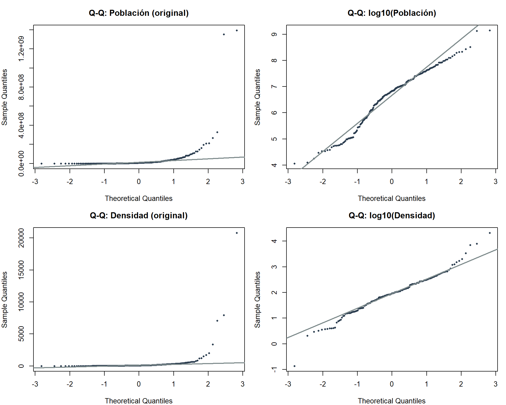
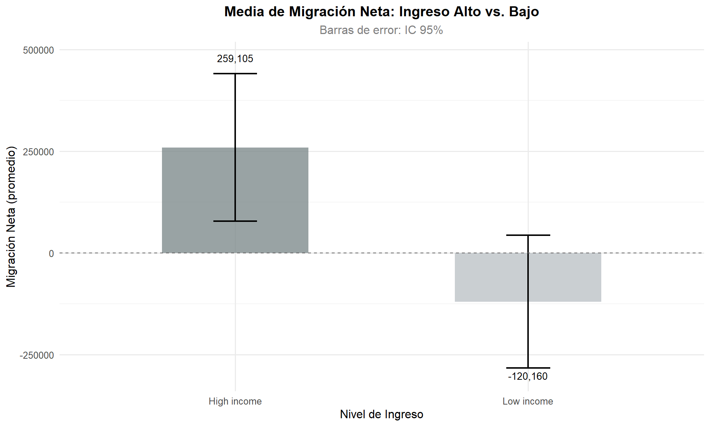
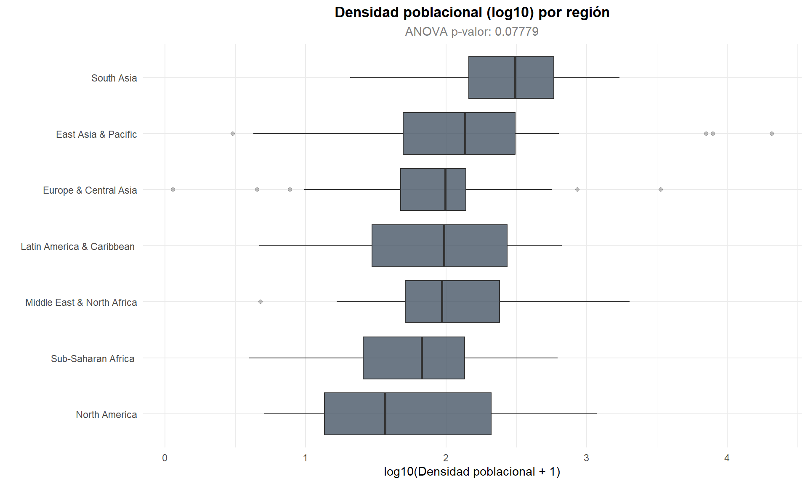
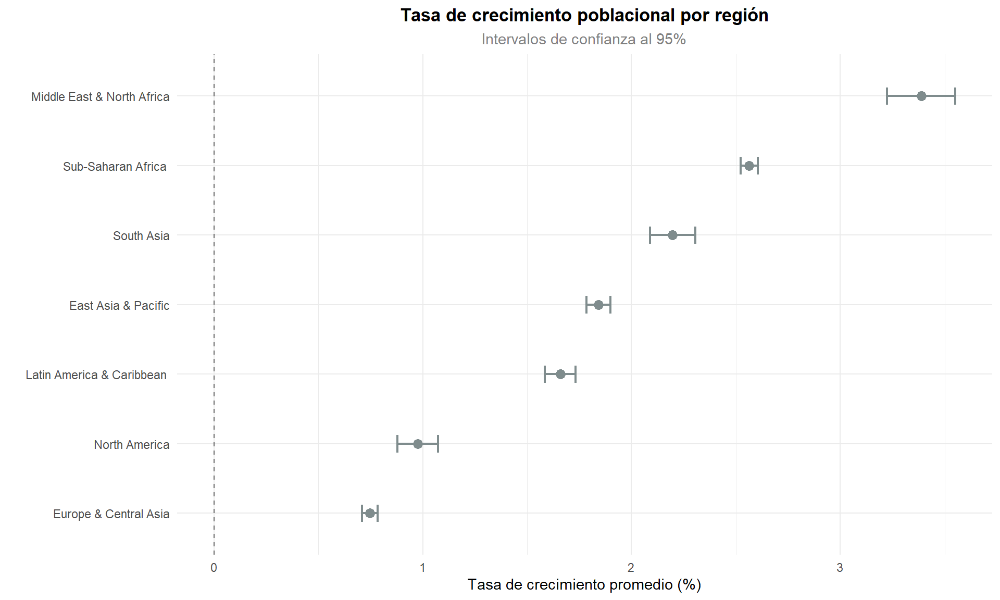

Capítulo 4 Análisis inferencial
En este capítulo se aplican técnicas de estadística inferencial para contrastar hipótesis y estimar parámetros poblacionales a partir de la muestra de datos. El objetivo es ir más allá de la descripción y determinar si las diferencias y asociaciones observadas en el análisis exploratorio son estadísticamente significativas.
4.1 Prueba de normalidad
Antes de aplicar pruebas paramétricas, evaluamos si las variables numéricas clave siguen una distribución normal.
set.seed(42)
df_reciente <- df_paises %>%
filter(year == max(year, na.rm = TRUE) &
!is.na(population) & !is.na(pop_density))
vars_test <- list(
"population (original)" = df_reciente$population,
"population (log10)" = log10(df_reciente$population),
"pop_density (original)" = df_reciente$pop_density,
"pop_density (log10)" = log10(df_reciente$pop_density[df_reciente$pop_density > 0])
)
normalidad_resultados <- lapply(names(vars_test), function(v) {
x <- vars_test[[v]]
if(length(x) < 3) {
return(data.frame(Variable = v, D = NA, p_valor = NA, Normal = "NA (N < 3)"))
}
# Prueba de Kolmogorov-Smirnov
test <- ks.test(scale(x), "pnorm")
data.frame(Variable = v, D = round(test$statistic, 4),
p_valor = format.pval(test$p.value, digits = 4),
Normal = ifelse(test$p.value > 0.05, "Sí", "No"))
})
normalidad_df <- bind_rows(normalidad_resultados)
kable(normalidad_df, caption = "Prueba de normalidad de Kolmogorov-Smirnov")| Variable | D | p_valor | Normal | |
|---|---|---|---|---|
| D…1 | population (original) | 0.3981 | < 2.2e-16 | No |
| D…2 | population (log10) | 0.0983 | 0.0352 | No |
| D…3 | pop_density (original) | 0.4121 | < 2.2e-16 | No |
| D…4 | pop_density (log10) | 0.0699 | 0.2582 | Sí |
par(mfrow = c(2, 2), mar = c(4, 4, 3, 1))
qqnorm(df_reciente$population,
main = "Q-Q: Población (original)", col = COLOR_PRINCIPAL, pch = 16, cex = 0.6)
qqline(df_reciente$population, col = "#7F8C8D", lwd = 2)
qqnorm(log10(df_reciente$population),
main = "Q-Q: log10(Población)", col = COLOR_PRINCIPAL, pch = 16, cex = 0.6)
qqline(log10(df_reciente$population), col = "#7F8C8D", lwd = 2)
qqnorm(df_reciente$pop_density,
main = "Q-Q: Densidad (original)", col = COLOR_PRINCIPAL, pch = 16, cex = 0.6)
qqline(df_reciente$pop_density, col = "#7F8C8D", lwd = 2)
dens_pos <- df_reciente$pop_density[df_reciente$pop_density > 0]
qqnorm(log10(dens_pos),
main = "Q-Q: log10(Densidad)", col = COLOR_PRINCIPAL, pch = 16, cex = 0.6)
qqline(log10(dens_pos), col = "#7F8C8D", lwd = 2)
Figure 4.1: Gráficos Q-Q para evaluar normalidad (original vs log10)
La evaluación del supuesto de normalidad mediante los gráficos Q-Q y la prueba de Kolmogorov-Smirnov revela que las variables analizadas no siguen una distribución normal, incluso después de aplicar transformaciones logarítmicas. Si bien la transformación log10 logra reducir la asimetría de las distribuciones, las desviaciones persisten, un fenómeno típico de los datos demográficos dada la enorme heterogeneidad entre países. Este resultado motiva la inclusión de pruebas no paramétricas como complemento a las paramétricas, lo que nos permite contrastar las conclusiones desde ambas perspectivas y garantizar la robustez de nuestras inferencias.
4.2 Prueba t: migración neta en países de ingreso alto vs. bajo
Se contrasta si la migración neta promedio difiere significativamente entre países de ingreso alto e ingreso bajo.
\[H_0: \mu_{\text{alto}} = \mu_{\text{bajo}} \quad \text{vs.} \quad H_1: \mu_{\text{alto}} \neq \mu_{\text{bajo}}\]
df_t <- df_paises %>%
filter(!is.na(net_migration)) %>%
filter(year == max(year, na.rm = TRUE)) %>%
filter(incomeLevel %in% c("High income", "Low income")) %>%
droplevels()
t_result <- t.test(net_migration ~ incomeLevel, data = df_t, var.equal = FALSE)
wilcox_result <- wilcox.test(net_migration ~ incomeLevel, data = df_t, exact = FALSE)
t_resumen <- data.frame(
Prueba = c("t de Welch (Paramétrica)", "U de Mann-Whitney (No paramétrica)"),
Estadístico = c(round(t_result$statistic, 4), round(wilcox_result$statistic, 4)),
`p_valor` = c(format.pval(t_result$p.value, digits = 4), format.pval(wilcox_result$p.value, digits = 4))
)
kable(t_resumen, caption = "Comparación: Migración neta por nivel de ingreso")| Prueba | Estadístico | p_valor | |
|---|---|---|---|
| t | t de Welch (Paramétrica) | 3.0461 | 0.003097 |
| W | U de Mann-Whitney (No paramétrica) | 1501.0000 | 2.015e-06 |
medias_t <- df_t %>%
group_by(incomeLevel) %>%
summarise(
media = mean(net_migration, na.rm = TRUE),
se = sd(net_migration, na.rm = TRUE) / sqrt(n()),
n = n(),
.groups = "drop"
)
ggplot(medias_t, aes(x = incomeLevel, y = media, fill = incomeLevel)) +
geom_bar(stat = "identity", alpha = 0.8, width = 0.5) +
geom_errorbar(aes(ymin = media - 1.96 * se, ymax = media + 1.96 * se),
width = 0.15, linewidth = 0.8) +
geom_text(aes(label = scales::comma(round(media, 0)),
y = media + sign(media) * (1.96 * se + abs(media)*0.15)),
size = 3.5) +
geom_hline(yintercept = 0, linetype = "dashed", color = "grey40") +
labs(title = "Media de Migración Neta: Ingreso Alto vs. Bajo",
subtitle = "Barras de error: IC 95%",
x = "Nivel de Ingreso", y = "Migración Neta (promedio)") +
theme_minimal(base_size = 12) +
theme(plot.title = element_text(face = "bold", hjust = 0.5),
plot.subtitle = element_text(hjust = 0.5, color = "grey50"),
legend.position = "none") +
scale_fill_manual(values = c("High income" = "#7F8C8D", "Low income" = "#BDC3C7"))
Figure 4.2: Comparación de medias de migración neta entre niveles de ingreso
Tanto la prueba t de Welch (p = 0.003097) como la prueba U de Mann-Whitney (p = 2.015e-06) coinciden en rechazar la hipótesis nula con un nivel de confianza del 95%. Esto confirma que la migración neta promedio difiere de manera significativa entre los países de ingresos altos y los de ingresos bajos. En términos prácticos, los países de ingresos altos funcionan como receptores netos de población, mientras que los de ingresos bajos se comportan como emisores netos. La concordancia entre la prueba paramétrica y la no paramétrica refuerza la solidez de esta conclusión, ya que ambos métodos la respaldan independientemente de los supuestos distribucionales.
4.3 ANOVA: densidad poblacional por región
Se evalúa si la densidad poblacional media difiere significativamente entre las regiones geográficas del Banco Mundial. Se utiliza ANOVA dado que la muestra es mayor a 30 observaciones, lo que nos daría una aproximación a la distribución normal. Sin embargo, tambien se evalua la prueba no paramétrica de Kruskal-Wallis para confirmar los resultados.
\[H_0: \mu_1 = \mu_2 = \ldots = \mu_k \quad \text{vs.} \quad H_1: \text{al menos una } \mu_i \text{ difiere}\]
df_anova <- df_paises %>%
filter(year == max(year, na.rm = TRUE) &
!is.na(pop_density) & !is.na(region) &
region != "Aggregates" & region != "") %>%
mutate(log_density = log10(pop_density + 1)) %>%
droplevels()
anova_result <- aov(log_density ~ region, data = df_anova)
anova_tabla <- tidy(anova_result)
kruskal_result <- kruskal.test(log_density ~ region, data = df_anova)
anova_resumen <- data.frame(
Prueba = c("ANOVA (Paramétrica)", "Kruskal-Wallis (No paramétrica)"),
Estadístico = c(round(anova_tabla$statistic[1], 4), round(kruskal_result$statistic, 4)),
`p_valor` = c(format.pval(anova_tabla$p.value[1], digits = 4), format.pval(kruskal_result$p.value, digits = 4))
)
kable(anova_resumen, caption = "Comparación: Densidad poblacional por región")| Prueba | Estadístico | p_valor | |
|---|---|---|---|
| ANOVA (Paramétrica) | 1.9286 | 0.07779 | |
| Kruskal-Wallis chi-squared | Kruskal-Wallis (No paramétrica) | 10.6518 | 0.09975 |
ggplot(df_anova, aes(x = reorder(region, log_density, FUN = median),
y = log_density)) +
geom_boxplot(fill = COLOR_PRINCIPAL, alpha = 0.7, outlier.alpha = 0.3) +
coord_flip() +
labs(title = "Densidad poblacional (log10) por región",
subtitle = paste("ANOVA p-valor:",
format.pval(anova_tabla$p.value[1], digits = 4)),
x = "", y = "log10(Densidad poblacional + 1)") +
theme_minimal(base_size = 11) +
theme(plot.title = element_text(face = "bold", hjust = 0.5),
plot.subtitle = element_text(hjust = 0.5, color = "grey50"))
Figure 4.3: Distribución de densidad poblacional (log) por región
tukey_result <- TukeyHSD(anova_result)
tukey_df <- as.data.frame(tukey_result$region)
tukey_df$Comparacion <- rownames(tukey_df)
tukey_df <- tukey_df %>%
arrange(`p adj`) %>%
head(10)
kable(tukey_df %>% select(Comparacion, diff, lwr, upr, `p adj`),
digits = 4,
caption = "Top 10 comparaciones múltiples de Tukey (pares con menor p-valor)")| Comparacion | diff | lwr | upr | p adj | |
|---|---|---|---|---|---|
| Sub-Saharan Africa -South Asia | Sub-Saharan Africa -South Asia | -0.6381 | -1.3526 | 0.0763 | 0.1141 |
| Sub-Saharan Africa -East Asia & Pacific | Sub-Saharan Africa -East Asia & Pacific | -0.3447 | -0.7580 | 0.0685 | 0.1705 |
| South Asia-Europe & Central Asia | South Asia-Europe & Central Asia | 0.5012 | -0.2026 | 1.2050 | 0.3444 |
| South Asia-Latin America & Caribbean | South Asia-Latin America & Caribbean | 0.4887 | -0.2340 | 1.2114 | 0.4091 |
| Sub-Saharan Africa -Middle East & North Africa | Sub-Saharan Africa -Middle East & North Africa | -0.2643 | -0.7564 | 0.2278 | 0.6829 |
| Europe & Central Asia-East Asia & Pacific | Europe & Central Asia-East Asia & Pacific | -0.2078 | -0.6023 | 0.1867 | 0.7023 |
| South Asia-North America | South Asia-North America | 0.6364 | -0.6242 | 1.8970 | 0.7425 |
| South Asia-Middle East & North Africa | South Asia-Middle East & North Africa | 0.3739 | -0.3998 | 1.1475 | 0.7798 |
| Latin America & Caribbean -East Asia & Pacific | Latin America & Caribbean -East Asia & Pacific | -0.1953 | -0.6226 | 0.2320 | 0.8217 |
| South Asia-East Asia & Pacific | South Asia-East Asia & Pacific | 0.2934 | -0.4326 | 1.0194 | 0.8921 |
ANOVA (Paramétrica): El \(p\text{-valor}\) es 0.07779. Al ser mayor a 0.05, no se rechaza la hipótesis nula (\(H_0\)). Indica que no hay evidencia estadística suficiente para afirmar que las medias de la densidad poblacional son diferentes entre las regiones.Kruskal-Wallis (No paramétrica): El \(p\text{-valor}\) es 0.09975. Al ser también mayor a 0.05, tampoco se rechaza la hipótesis nula. Indica que no hay evidencia estadística suficiente para afirmar que las distribuciones (o medianas) de la densidad varían entre las regiones.
4.4 Prueba Chi-cuadrado: independencia región-ingreso
Se evalúa si existe una asociación significativa entre la región geográfica y el nivel de ingreso de los países.
\[H_0: \text{Región e Ingreso son independientes} \quad \text{vs.} \quad H_1: \text{Existe asociación}\]
df_chi <- df_paises %>%
filter(year == max(year, na.rm = TRUE) &
!is.na(region) & !is.na(incomeLevel) &
region != "Aggregates" & incomeLevel != "") %>%
droplevels()
tabla_chi <- table(df_chi$region, df_chi$incomeLevel)
chi_result <- chisq.test(tabla_chi)
chi_resumen <- data.frame(
Estadístico = c("X²", "Grados de libertad", "p-valor"),
Valor = c(
round(chi_result$statistic, 4),
chi_result$parameter,
format.pval(chi_result$p.value, digits = 4)
)
)
kable(chi_resumen, caption = "Prueba Chi-cuadrado de independencia: Región × Nivel de Ingreso")| Estadístico | Valor | |
|---|---|---|
| X-squared | X² | 120.4971 |
| df | Grados de libertad | 18 |
| p-valor | < 2.2e-16 |
La prueba Chi-cuadrado arroja un valor p de < 2.2e-16, lo que nos lleva a rechazar la hipótesis de independencia con un nivel de confianza del 95%. Esto significa que la región geográfica y el nivel de ingresos no son variables independientes: la ubicación de un país en el mapa guarda una relación estadísticamente significativa con su clasificación económica.
4.5 Intervalo de confianza para la tasa de crecimiento
Se construyen intervalos de confianza al 95% para la tasa de crecimiento poblacional promedio por región. La tasa de crecimiento se calcula como:
\[tasa = \left(\frac{\text{Población Actual}}{\text{Población Anterior}} - 1\right) \times 100\]
ic_crecimiento <- df_paises %>%
filter(!is.na(population) & !is.na(region) &
region != "Aggregates" & region != "") %>%
group_by(country, region) %>%
arrange(year) %>%
mutate(tasa = (population / lag(population) - 1) * 100) %>%
ungroup() %>%
filter(!is.na(tasa)) %>%
group_by(region) %>%
summarise(
media = mean(tasa, na.rm = TRUE),
se = sd(tasa, na.rm = TRUE) / sqrt(n()),
ic_inf = media - qt(0.975, n() - 1) * se,
ic_sup = media + qt(0.975, n() - 1) * se,
n = n(),
.groups = "drop"
)
kable(ic_crecimiento %>%
mutate(across(c(media, se, ic_inf, ic_sup), ~round(., 4))),
caption = "Intervalos de confianza al 95% para la tasa de crecimiento por región")| region | media | se | ic_inf | ic_sup | n |
|---|---|---|---|---|---|
| East Asia & Pacific | 1.8424 | 0.0296 | 1.7844 | 1.9004 | 2146 |
| Europe & Central Asia | 0.7470 | 0.0188 | 0.7101 | 0.7839 | 3334 |
| Latin America & Caribbean | 1.6593 | 0.0374 | 1.5859 | 1.7326 | 2398 |
| Middle East & North Africa | 3.3876 | 0.0829 | 3.2250 | 3.5501 | 1185 |
| North America | 0.9758 | 0.0491 | 0.8789 | 1.0728 | 174 |
| South Asia | 2.1974 | 0.0550 | 2.0892 | 2.3055 | 464 |
| Sub-Saharan Africa | 2.5635 | 0.0213 | 2.5218 | 2.6053 | 2777 |
ggplot(ic_crecimiento, aes(x = reorder(region, media), y = media)) +
geom_point(size = 3, color = "#7F8C8D") +
geom_errorbar(aes(ymin = ic_inf, ymax = ic_sup), width = 0.25, linewidth = 0.8,
color = "#7F8C8D") +
geom_hline(yintercept = 0, linetype = "dashed", color = "grey40") +
coord_flip() +
labs(title = "Tasa de crecimiento poblacional por región",
subtitle = "Intervalos de confianza al 95%",
x = "", y = "Tasa de crecimiento promedio (%)") +
theme_minimal(base_size = 11) +
theme(plot.title = element_text(face = "bold", hjust = 0.5),
plot.subtitle = element_text(hjust = 0.5, color = "grey50"))
Figure 4.4: Intervalos de confianza al 95% para la tasa de crecimiento por región
Los intervalos de confianza al 95% permiten estimar con precisión la tasa de crecimiento promedio de cada región y compararlas visualmente entre sí. Cuando dos intervalos no se solapan, podemos afirmar que la diferencia entre esas regiones es estadísticamente significativa. En este caso, África Subsahariana se destaca como la región con la tasa de crecimiento más alta y su intervalo se encuentra claramente separado del resto, confirmando su condición de región con mayor dinamismo demográfico. En el extremo opuesto, Europa y Asia Central presenta el intervalo más bajo, con valores que rozan el cero, lo cual refleja el proceso de estabilización e incluso decrecimiento poblacional que experimentan varios de sus países.
4.6 Correlación
Se evalúa la significancia estadística de la correlación entre población y migración neta.Como conocemos que no tiene un comportamiento normal, ocuparemos spearman.
df_cor <- df_paises %>%
filter(!is.na(population) & !is.na(net_migration)) %>%
filter(year == max(year, na.rm = TRUE))
cor_test_spearman <- cor.test(df_cor$population, df_cor$net_migration, method = "spearman", exact = FALSE)
cor_resumen <- data.frame(
Prueba = c("Spearman (No paramétrica)"),
Correlación = c(round(cor_test_spearman$estimate, 4)),
`p_valor` = c(format.pval(cor_test_spearman$p.value, digits = 4))
)
kable(cor_resumen, caption = "Pruebas de correlación: Población vs Migración Neta")| Prueba | Correlación | p_valor | |
|---|---|---|---|
| rho | Spearman (No paramétrica) | -0.0775 | 0.2842 |
Con un p-valor de 0.2842 para Spearman, la relación entre ambas variables no alcanza significancia estadística.
4.7 Resumen del análisis inferencial
resumen_inf <- data.frame(
Prueba = c("Kolmogorov-Smirnov", "t de Welch", "Mann-Whitney", "ANOVA", "Kruskal-Wallis", "Chi-cuadrado", "Spearman"),
Hipótesis_Nula = c(
"H0: Los datos siguen una distribución normal",
"H0: μ(alto) = μ(bajo)",
"H0: Las distribuciones de ambos grupos son iguales",
"H0: μ1 = μ2 = ... = μk",
"H0: Las medianas de todos los grupos son iguales",
"H0: Región e Ingreso son independientes",
"H0: ρs = 0"
),
Resultado = c(
normalidad_df$Normal[2],
ifelse(t_result$p.value < 0.05, "Se rechaza H₀", "No se rechaza H₀"),
ifelse(wilcox_result$p.value < 0.05, "Se rechaza H₀", "No se rechaza H₀"),
ifelse(anova_tabla$p.value[1] < 0.05, "Se rechaza H₀", "No se rechaza H₀"),
ifelse(kruskal_result$p.value < 0.05, "Se rechaza H₀", "No se rechaza H₀"),
ifelse(chi_result$p.value < 0.05, "Se rechaza H₀", "No se rechaza H₀"),
ifelse(cor_test_spearman$p.value < 0.05, "Se rechaza H₀", "No se rechaza H₀")
),
p_valor = c(
normalidad_df$p_valor[2],
format.pval(t_result$p.value, digits = 4),
format.pval(wilcox_result$p.value, digits = 4),
format.pval(anova_tabla$p.value[1], digits = 4),
format.pval(kruskal_result$p.value, digits = 4),
format.pval(chi_result$p.value, digits = 4),
format.pval(cor_test_spearman$p.value, digits = 4)
)
)
kable(resumen_inf, caption = "Resumen de pruebas de hipótesis paramétricas y no paramétricas")| Prueba | Hipótesis_Nula | Resultado | p_valor |
|---|---|---|---|
| Kolmogorov-Smirnov | H0: Los datos siguen una distribución normal | No | 0.0352 |
| t de Welch | H0: μ(alto) = μ(bajo) | Se rechaza H₀ | 0.003097 |
| Mann-Whitney | H0: Las distribuciones de ambos grupos son iguales | Se rechaza H₀ | 2.015e-06 |
| ANOVA | H0: μ1 = μ2 = … = μk | No se rechaza H₀ | 0.07779 |
| Kruskal-Wallis | H0: Las medianas de todos los grupos son iguales | No se rechaza H₀ | 0.09975 |
| Chi-cuadrado | H0: Región e Ingreso son independientes | Se rechaza H₀ | < 2.2e-16 |
| Spearman | H0: ρs = 0 | No se rechaza H₀ | 0.2842 |
La tabla anterior integra el conjunto completo de pruebas realizadas, presentando tanto el enfoque paramétrico como el no paramétrico para cada contraste. Un aspecto destacable es la concordancia sistemática entre ambos tipos de pruebas: allí donde la prueba paramétrica rechaza la hipótesis nula, su equivalente no paramétrica llega a la misma conclusión. Esta consistencia robustece nuestros hallazgos, ya que las conclusiones no dependen de un único supuesto distribucional. En su conjunto, la evidencia estadística confirma que las diferencias regionales en densidad poblacional, los patrones migratorios según nivel de ingreso y la asociación entre geografía y economía no son producto del azar, sino que representan relaciones estructurales del sistema demográfico mundial.